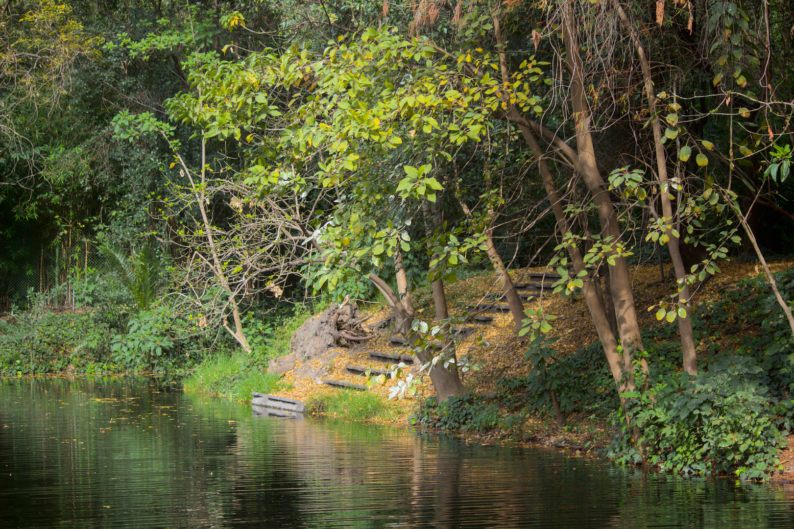
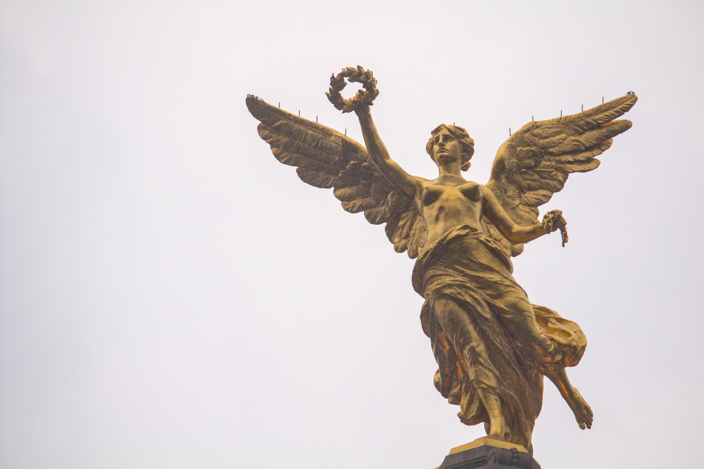
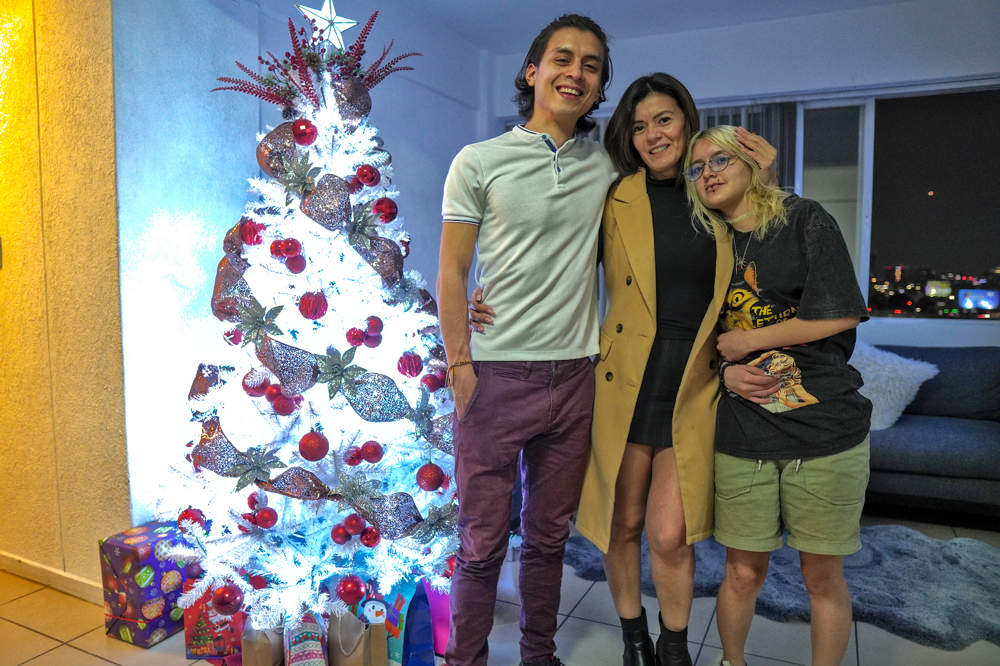
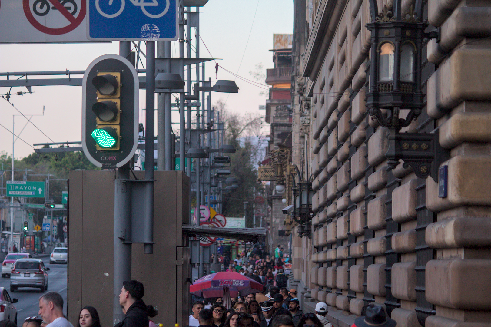

Unter dem aztekischen Himmel: Die Chroniken eines Wiedersehens
I. Die Ankunft im Land der Azteken
 Die Reise hatte begonnen – und mit ihr ein neues Abenteuer. Während das Flugzeug den Himmel in Richtung Mexiko-Stadt durchquerte, versank ich in Gedanken voller Erwartung und Aufregung. Dies war keine gewöhnliche Reise; es war ein lang ersehntes Wiedersehen mit meiner Mutter und meinem Bruder, nachdem wir uns jahrelang ausschließlich über Bildschirme verständigt hatten. Die Weihnachtszeit bot den perfekten Rahmen für dieses Wiedersehen, auch wenn die Tatsache, dass ich am 31. Dezember zurückkehren würde, um das neue Jahr in Kolumbien mit meiner Partnerin zu verbringen, dem Ganzen einen melancholischen Beigeschmack verlieh. Ihre Abwesenheit war spürbar – eine jener Abwesenheiten, die selbst das Glück mit einem Hauch von Traurigkeit einfärben.
Auch Nervosität war mit im Gepäck. Ich hatte Geschichten von Landsleuten gehört, denen die Einreise nach Mexiko verweigert worden war, also bereitete ich mich gut vor: eine Mappe voller notwendiger Dokumente und ein gründliches Wissen über die Einreisebestimmungen. Zwar benötigen Kolumbianer kein Visum zur Einreise, doch die Dokumentenanforderungen können überwältigend sein. Meine bisherigen Erfahrungen mit Reisen nach Europa und in die Karibik gaben mir ein gewisses Maß an Zuversicht, aber Flughäfen bleiben stets ein unberechenbares Terrain.
Zum Glück war mir das Schicksal von Anfang an wohlgesinnt. Der Flug war nicht ausgebucht, was mir etwas zusätzlichen Platz verschaffte – und zu meiner Freude sogar ein zweites Essen dank der übrigen Bordverpflegung. Gut essen zu können macht jeden Flug angenehmer, selbst wenn er – wie dieser – mit fünf Stunden eher kurz ist.
Die Landung am Internationalen Flughafen Benito Juárez, benannt nach dem legendären mexikanischen Präsidenten, markierte den offiziellen Beginn meines Abenteuers. Der Anblick der Stadt aus der Luft war beeindruckend: ein endloses Meer aus Lichtern, das den Horizont herauszufordern schien. Am Flughafen wartete meine Mutter voller Vorfreude. Ich stellte mir den Moment vor, in dem ich sie umarmen würde – wie die Wärme ihrer Umarmung all die Jahre der Trennung in einem Augenblick auflösen würde.
Auch die Fahrt zur Wohnung war mit Aufregung verbunden. Mein jüngerer Bruder, der glaubte, ich würde erst drei Tage später ankommen, hatte keine Ahnung, dass ich rechtzeitig zu seinem Geburtstag erscheinen würde. Es war eine sorgfältig geplante Überraschung – ein kleiner geheimer Plan zwischen meiner Mutter und mir, um diesen Tag unvergesslich zu machen. Ich stellte mir seinen Gesichtsausdruck vor, wenn ich plötzlich in der Tür stehen würde – und wie dieses unerwartete Wiedersehen vielleicht das schönste Geschenk überhaupt sein könnte.
Diese erste Nacht in Mexiko-Stadt versprach, voller Emotionen zu sein. Es würden Lachen, endlose Gespräche und diese unbeschreibliche Verbindung folgen, die man nur spürt, wenn man seinen Liebsten von Angesicht zu Angesicht gegenübersteht. Nach so langer Trennung würden die Worte ganz natürlich fließen, und selbst die stillen Momente wären keine peinliche Leere, sondern Gelegenheiten, einfach die gemeinsame Nähe zu genießen. Es war mehr als ein Wiedersehen – es war eine Heimkehr, zurück in den Schoß einer Familie, die trotz Zeit und Distanz mein sicherer Hafen geblieben war.
Die Ankunft im Land der Azteken markierte nicht nur den Beginn eines Urlaubs, sondern auch ein Wiederanknüpfen an meine Wurzeln, meine Zuneigungen – und in gewisser Weise an mich selbst. Das Versprechen, Mexiko zu entdecken oder wiederzuentdecken, lag vor mir, voller Farben, Aromen und Emotionen, die – wie ich bald feststellen sollte – diese Reise zu einer unvergesslichen Erfahrung machen würden.
Die Reise hatte begonnen – und mit ihr ein neues Abenteuer. Während das Flugzeug den Himmel in Richtung Mexiko-Stadt durchquerte, versank ich in Gedanken voller Erwartung und Aufregung. Dies war keine gewöhnliche Reise; es war ein lang ersehntes Wiedersehen mit meiner Mutter und meinem Bruder, nachdem wir uns jahrelang ausschließlich über Bildschirme verständigt hatten. Die Weihnachtszeit bot den perfekten Rahmen für dieses Wiedersehen, auch wenn die Tatsache, dass ich am 31. Dezember zurückkehren würde, um das neue Jahr in Kolumbien mit meiner Partnerin zu verbringen, dem Ganzen einen melancholischen Beigeschmack verlieh. Ihre Abwesenheit war spürbar – eine jener Abwesenheiten, die selbst das Glück mit einem Hauch von Traurigkeit einfärben.
Auch Nervosität war mit im Gepäck. Ich hatte Geschichten von Landsleuten gehört, denen die Einreise nach Mexiko verweigert worden war, also bereitete ich mich gut vor: eine Mappe voller notwendiger Dokumente und ein gründliches Wissen über die Einreisebestimmungen. Zwar benötigen Kolumbianer kein Visum zur Einreise, doch die Dokumentenanforderungen können überwältigend sein. Meine bisherigen Erfahrungen mit Reisen nach Europa und in die Karibik gaben mir ein gewisses Maß an Zuversicht, aber Flughäfen bleiben stets ein unberechenbares Terrain.
Zum Glück war mir das Schicksal von Anfang an wohlgesinnt. Der Flug war nicht ausgebucht, was mir etwas zusätzlichen Platz verschaffte – und zu meiner Freude sogar ein zweites Essen dank der übrigen Bordverpflegung. Gut essen zu können macht jeden Flug angenehmer, selbst wenn er – wie dieser – mit fünf Stunden eher kurz ist.
Die Landung am Internationalen Flughafen Benito Juárez, benannt nach dem legendären mexikanischen Präsidenten, markierte den offiziellen Beginn meines Abenteuers. Der Anblick der Stadt aus der Luft war beeindruckend: ein endloses Meer aus Lichtern, das den Horizont herauszufordern schien. Am Flughafen wartete meine Mutter voller Vorfreude. Ich stellte mir den Moment vor, in dem ich sie umarmen würde – wie die Wärme ihrer Umarmung all die Jahre der Trennung in einem Augenblick auflösen würde.
Auch die Fahrt zur Wohnung war mit Aufregung verbunden. Mein jüngerer Bruder, der glaubte, ich würde erst drei Tage später ankommen, hatte keine Ahnung, dass ich rechtzeitig zu seinem Geburtstag erscheinen würde. Es war eine sorgfältig geplante Überraschung – ein kleiner geheimer Plan zwischen meiner Mutter und mir, um diesen Tag unvergesslich zu machen. Ich stellte mir seinen Gesichtsausdruck vor, wenn ich plötzlich in der Tür stehen würde – und wie dieses unerwartete Wiedersehen vielleicht das schönste Geschenk überhaupt sein könnte.
Diese erste Nacht in Mexiko-Stadt versprach, voller Emotionen zu sein. Es würden Lachen, endlose Gespräche und diese unbeschreibliche Verbindung folgen, die man nur spürt, wenn man seinen Liebsten von Angesicht zu Angesicht gegenübersteht. Nach so langer Trennung würden die Worte ganz natürlich fließen, und selbst die stillen Momente wären keine peinliche Leere, sondern Gelegenheiten, einfach die gemeinsame Nähe zu genießen. Es war mehr als ein Wiedersehen – es war eine Heimkehr, zurück in den Schoß einer Familie, die trotz Zeit und Distanz mein sicherer Hafen geblieben war.
Die Ankunft im Land der Azteken markierte nicht nur den Beginn eines Urlaubs, sondern auch ein Wiederanknüpfen an meine Wurzeln, meine Zuneigungen – und in gewisser Weise an mich selbst. Das Versprechen, Mexiko zu entdecken oder wiederzuentdecken, lag vor mir, voller Farben, Aromen und Emotionen, die – wie ich bald feststellen sollte – diese Reise zu einer unvergesslichen Erfahrung machen würden.
 II. Erste Nacht in Mexiko-Stadt
II. Erste Nacht in Mexiko-Stadt
Meine Ankunft in Mexiko hätte nicht spektakulärer sein können. Beim Verlassen des Flugzeugs wurde ich von der Herzlichkeit meiner Mutter und ihres Partners empfangen – ihre strahlenden Gesichter spiegelten die Freude unseres Wiedersehens wider. Direkt vom Flughafen fuhren wir zur legendären Plaza Garibaldi, ein Ort voller Geschichte und Tradition, der versprach, mich mitten in die musikalische und festliche Seele Mexikos zu entführen. Die nach Giuseppe Garibaldi benannte Plaza – einem Helden italienischer Herkunft, dessen Enkel Mexiko während der US-Intervention von 1914 verteidigt hatte – ist weit mehr als nur ein Treffpunkt. Seit dem 20. Jahrhundert versammeln sich hier Mariachi-Musiker, um ihre Musik mit dem Publikum zu teilen, und machen die Plaza zu einem Zentrum der Kultur und Lebensfreude. Die nächtliche Atmosphäre war elektrisierend: Gitarren, Trompeten und Gesang verschmolzen zu einer Symphonie, die jeden Winkel erfüllte. Wir besuchten das legendäre Salón Tenampa – ein Ort, der seit seiner Eröffnung im Jahr 1925 ein Wahrzeichen von Mexiko-Stadt ist. Gegründet von Juan Indalecio Hernández Rojas und benannt nach einem Dorf in Veracruz, ist der Salón für seine Rolle bei der Popularisierung der Mariachi-Musik bekannt und gilt als Bollwerk mexikanischer Tradition. An den Tischen sitzend, umgeben von Wandmalereien, die Geschichten aus vergangenen Zeiten erzählten, ließ ich mich von dieser authentischen Erfahrung vollkommen mitreißen. Dort kostete ich eine köstliche Birria – eine kräftige, aromatische Brühe mit Ziegenfleisch –, deren Geschmack mich direkt ins Herz der traditionellen mexikanischen Küche versetzte. Die Getränke ließen nicht lange auf sich warten: Ich probierte eine scheinbar endlose Auswahl an Tequilas, jeder feiner als der vorherige, und wagte mich sogar an einen Schluck Mezcal, dessen rauchiges Aroma bei jedem Schluck aufs Neue überraschte. Währenddessen umringte uns eine Gruppe von Mariachis. Ihre Lieder waren ein Fest des Lebens und der Leidenschaft; wir sangen mit, unsere Stimmen verschmolzen mit der Musik in einem Moment, der sich zeitlos anfühlte. Nach diesem einzigartigen Erlebnis kehrten wir nach Hause zurück. Doch die Überraschung war noch nicht vorbei: Ich weckte meinen kleinen Bruder, um ihm zum Geburtstag zu gratulieren. Sein verschlafener Blick verwandelte sich blitzschnell in freudiges Erstaunen, als er mich sah. Wir setzten die Feier im privaten Rahmen fort – teilten Geschichten, lachten, und stießen noch einmal an. Die Nacht zog sich bis zum Morgengrauen, und obwohl die Müdigkeit langsam einsetzte, war jede Minute es wert – getragen von der Wärme unseres Zusammenseins. Diese erste Nacht in Mexiko-Stadt war magisch – ein Auftakt, der den Ton für eine unvergessliche Reise vorgab. Zwischen Musik, Aromen und Familie erlebte ich einen Empfang, der mich daran erinnerte, wie kraftvoll das gemeinsame Feiern und Bewahren unserer Traditionen sein kann.
III. Der Zoo im Chapultepec-Park
In den Tagen nach meiner Ankunft wurde der Chapultepec-Park zu unserem Ziel. Dieser weite, legendäre Ort – einer der größten und ältesten städtischen Parks der Welt – birgt auf seinen Wegen einen historischen und natürlichen Reichtum, den man unmöglich ignorieren kann. Seine schiere Größe, eine scheinbar endlose grüne Oase, hüllte mich in ein Gefühl von Ruhe und Staunen. Mit jedem Schritt verblasste der Lärm der Metropole, ersetzt durch das Flüstern des Windes in den Bäumen und den Gesang der Vögel. Dieser Park, der von den Mexica als heiliger Ort verehrt wurde, wurde während der Kolonialzeit in einen Erholungs- und Wohnraum für die Vizekönige umgewandelt. Später wurde er der Öffentlichkeit zugänglich gemacht und zieht heute Tausende von Besuchern an. Sein Name „Chapultepec“ stammt aus dem Nahuatl und bedeutet „Hügel der Heuschrecke“ – eine Bedeutung, die beim Anblick der hügeligen Landschaft sofort verständlich wird. Eine der Perlen des Parks ist das majestätische Schloss Chapultepec, das stolz auf einem Hügel thront. Doch an diesem Tag war der Zoo von Chapultepec meine Hauptattraktion – ein Ort voller Geschichte und Biodiversität, der 1924 eröffnet wurde und als einer der bedeutendsten Zoos Lateinamerikas gilt. Gemeinsam mit meinem Bruder und einem seiner Freunde verbrachten wir den Tag damit, dieses tierische Refugium zu erkunden. Auch wenn einige der berühmtesten Tiere – wie der Große Panda oder der Löwe – nicht zu sehen waren, war die Vielfalt, die sich uns bot, dennoch beeindruckend. Von majestätischen Raubkatzen bis hin zu farbenprächtigen Vögeln – jede Ausstellung entführte uns in einen anderen Teil der Welt. Der Tag war geprägt von Staunen und Entdeckungsfreude, aber auch von Erschöpfung. Stundenlanges Umherwandern führte uns durch weite Teile des Parks – und ließ unsere Beine am Ende des Tages schmerzen. Doch das körperliche Müdesein wurde von der Zufriedenheit überlagert, eine so bereichernde Erfahrung gemacht zu haben. Wir kehrten nach Hause zurück mit dem Echo frischer Erinnerungen und den Gesprächen, die uns während des Ausflugs begleiteten. Der Chapultepec-Park – mit seiner Verbindung aus Geschichte, Natur und Tierwelt – hinterließ einen tiefen Eindruck bei mir. Dieser Tag war nicht nur ein Spaziergang durch seine Pfade, sondern auch eine Einladung, über die Schönheit und die Bedeutung solcher Orte nachzudenken – Orte, an denen Mensch und Natur im Einklang aufeinandertreffen.
IV. Chapultepec-Park und Avenida Reforma
Zwei Tage nach meinem Besuch im Zoo beschloss ich, zum Chapultepec-Park zurückzukehren – diesmal allein. Die Erfahrung, ihn in meinem eigenen Tempo zu erkunden, erlaubte mir, jedes Detail mit einer anderen Ruhe wahrzunehmen. Die Weite des Parks entfaltete sich vor mir wie eine riesige Leinwand aus Natur und Kultur, voller unentdeckter Ecken, die ich sehnsüchtig erkunden wollte. Meine erste Station war der See, an dem Dutzende von Menschen Boot fuhren, die man mieten konnte, um über das ruhige Wasser zu gleiten. Die Szene hatte etwas fast Hypnotisches: das Spiegelbild des Himmels auf der Oberfläche, das entfernte Lachen der Rudernden und das gleichmäßige Schaukeln der Boote schufen eine Atmosphäre vollkommener Ruhe. Von dort aus ging ich weiter in den Botanischen Garten – eine Oase innerhalb des Parks. Die Vielfalt der Flora war beeindruckend, mit einer Sammlung exotischer und einheimischer Pflanzen, die sich durch ihre Farbenpracht und Einzigartigkeit hervortaten. Besonders ins Auge fielen mir die Kakteen, deren Formen von klassischen stacheligen Silhouetten bis hin zu skulpturalen Gebilden reichten, die wie Naturwunder wirkten. Jeder Winkel des Gartens lud zur Betrachtung ein – und dazu, seine Schönheit fotografisch festzuhalten. Nach diesem Eintauchen in ein grünes Mikrokosmos machte ich mich auf den Weg zum Ausgang, der direkt zur ikonischen Avenida Reforma führt. Diese Hauptverkehrsader – eine der bekanntesten in Mexiko-Stadt – ist weit mehr als nur eine Straße: Sie ist ein Korridor der Geschichte, der Kunst und der Moderne. Entlang ihrer Strecke stehen zahlreiche Kreisverkehre mit monumentalen Skulpturen, die verschiedene Kapitel der mexikanischen Geschichte erzählen – doch kein Denkmal ist so berühmt wie der Engel der Unabhängigkeit. Als ich mich näherte, stand ich vor der majestätischen goldenen Statue, die sich mit fast himmlischer Anmut erhob. Ihre Haltung – ein erhobenes Bein, ausgebreitete Flügel und ein Lorbeerkranz in der Hand – symbolisierte Befreiung und Triumph. Die zerbrochene Kette in der anderen Hand verstärkte die Botschaft der Emanzipation – ein kraftvolles Symbol im Herzen der Stadt. Ich nahm mir einen Moment, um ihre Erhabenheit zu bewundern und über das geschichtliche Gewicht nachzudenken, das sie in sich trägt. Während ich meinen Weg entlang der Reforma fortsetzte, schweifte mein Blick immer wieder zu der Architektur zu beiden Seiten. Zwischen modernen Wolkenkratzern und klassischeren Bauwerken wirkte die Allee wie ein lebendiges Zeugnis der Entwicklung der Stadt. Auf dem Weg kam ich auch an einem improvisierten Markt vorbei, der sich über mehrere Blocks erstreckte. Sein lebendiges Angebot an Kunsthandwerk, Schmuck und typischem Streetfood war ein Fest für die Sinne – ein kleines Universum im städtischen Trubel. Am Ende des Tages kehrte ich mit einer stillen Zufriedenheit nach Hause zurück. Dieser Spaziergang allein hatte mir nicht nur die Schönheit der Stadt gezeigt, sondern auch eine tiefere, persönlichere Verbindung zu ihr ermöglicht. Weihnachten rückte näher.
V. Familie und Hallacas
Der Abend vor Heiligabend war von einer ebenso tief verwurzelten wie herzerwärmenden Tradition geprägt: der Zubereitung von Hallacas. Dieses Gericht, das als kulinarisches Symbol des venezolanischen Weihnachtsfestes gilt, ist weit mehr als ein Rezept – es ist ein Ritual, das die Familie rund um die Küche vereint, Generationen durch Erinnerungen und Geschmack miteinander verbindet. Auch wenn alle mit anpackten, muss ich zugeben, dass mein Beitrag anfangs eher bescheiden war. Meine erste Aufgabe bestand darin, die Bananenblätter zu reinigen – ein entscheidender Schritt, denn sie bilden die Hülle, die den Teig und die Füllung umschließt. Es war ein sorgfältiger, fast meditativer Prozess, der mir die Bedeutung von Präzision in der traditionellen Küche vor Augen führte. Später versammelten wir uns um den Tisch: meine Mutter, mein Bruder, eine Cousine und ich. Zwischen Lachen und Gesprächen übernahm jeder eine Aufgabe: den Teig ausbreiten, die Füllung verteilen, jede Hallaca sorgfältig falten. Meine abschließende Aufgabe war das Verschnüren – eine Kunst für sich. Die Spannung musste genau richtig sein: fest genug, damit sie während des Kochens nicht aufgingen, aber sanft genug, um die Blätter nicht zu beschädigen. Für mein erstes Mal war das Ergebnis durchaus zufriedenstellend – keine einzige öffnete sich im kochenden Wasser. Nach zwei Stunden Kochzeit kündigte der Duft an, dass sie fertig waren. Am 24. Dezember, inmitten der festlichen Stimmung, genossen wir gemeinsam die Früchte unserer Mühe. Das Abendessen war begleitet von familiärer Wärme, und nach dem Essen versammelten wir uns unter dem Weihnachtsbaum, um die Geschenke zu öffnen. Die Freude hielt bis tief in die Nacht an. Der Weihnachtstag bildete den perfekten Kontrast. Nach der geschäftigen Heiligabend-Vorbereitung verlief der 25. Dezember in vollkommener Ruhe. Wir gönnten uns Entspannung, genossen die Stille und das einfache Vergnügen, zusammen zu sein – ohne Eile, ohne Verpflichtungen. Es war der perfekte Abschluss einer Feier, die – über alle Aromen hinaus – von Familie und gemeinsam verbrachter Zeit handelte.
 VI. Val’Quirico – ein magisches Dörfchen
VI. Val’Quirico – ein magisches Dörfchen
Am 26. Dezember machten wir uns auf den Weg zu einem ganz besonderen Ziel: Val’Quirico, einem malerischen Touristenort im Bundesstaat Tlaxcala. Während wir auf der Landstraße fuhren, bot sich uns ein imposanter Anblick: die Vulkane Popocatépetl und Iztaccíhuatl, ewige Wächter der Region, erhoben sich majestätisch am Horizont. Diese natürlichen Giganten sind nicht nur geographische Wunder, sondern auch Hauptfiguren einer alten Legende. Man erzählt sich, dass Popocatépetl, ein mutiger Krieger, die schöne Iztaccíhuatl innig liebte. Doch ihre Liebe wurde auf die Probe gestellt: Der Vater der jungen Frau verlangte, dass der Krieger sie erst heiraten dürfe, wenn er siegreich aus dem Krieg zurückkehre. Ein eifersüchtiger Rivale verbreitete das falsche Gerücht vom Tod Popocatépetls, woraufhin Iztaccíhuatl an Kummer starb. Als Popocatépetl zurückkehrte und sie tot vorfand, trug er sie auf einen Berg, entzündete eine Fackel und schwor, für immer über sie zu wachen. Die Götter, bewegt von dieser Liebe, verwandelten die beiden in Berge: Sie in die liegende Silhouette der Iztaccíhuatl, „die schlafende Frau“, und ihn in den Popocatépetl, der bis heute raucht – als Zeichen seiner ewigen Wache. Schließlich erreichten wir Val’Quirico, ein kleines, charmantes Dörfchen, das dem mittelalterlichen toskanischen Stil nachempfunden ist. Kopfsteinpflasterstraßen, rustikale Gebäude und blumengeschmückte Balkone versetzten uns in eine Märchenkulisse. Da gerade Weihnachtszeit war, lag ein besonderer Zauber über dem Ort: Blinkende Lichter schmückten die Gassen und bildeten einen künstlichen Sternenhimmel, der dennoch Wärme und Nostalgie ausstrahlte. Wir verbrachten die Nacht dort, genossen die Atmosphäre und erkundeten die vielen Ecken voller Galerien, Kunsthandwerksläden und kultureller Veranstaltungen. Am nächsten Tag, vor der Abreise, kehrten wir in ein Restaurant ein, das auf exotisches Fleisch spezialisiert war. Ich wagte mich an Krokodilfleisch – dessen Geschmack und Konsistenz mich überraschenderweise an Hähnchen erinnerten. Auch Straußenfleisch probierte ich, das dem Rindfleisch geschmacklich näherkam, als ich erwartet hatte. Mit einem zufriedenen Gaumen und dem Kopf voller unvergesslicher Bilder machten wir uns auf den Rückweg nach Mexiko-Stadt – im Gepäck die Essenz eines Ortes, der, obwohl künstlich erschaffen, auf bezaubernde Weise die Magie vergangener Zeiten einzufangen wusste.
VII. Historisches Zentrum
In den letzten Tagen meiner Reise beschlossen wir, eine Tante zu besuchen, die ich zuvor nie persönlich kennengelernt hatte. Ihre drei kleinen Töchter, alle in Mexiko geboren, waren für mich neue Gesichter – sie hatten nie Venezuela oder Kolumbien besucht. Es war ein Treffen voller Freude und Neugier, geprägt von Lachen und Geschichten, die wir beim Mittagessen miteinander teilten. Nach diesem herzlichen Beisammensein machte ich mich mit meiner Mutter auf den Weg ins historische Herz der Stadt. In der Nacht meiner Ankunft war ich zwar auf der Plaza Garibaldi gewesen, doch mir war damals nicht bewusst, wie nah ich dem historischen Zentrum war. Erst am 29. Dezember, als ich gemeinsam mit meiner Mutter durch die Straßen spazierte, wurde mir das Ausmaß und der Charme dieses Stadtteils klar. Unsere erste Station war der Zócalo, einer der größten und bedeutendsten Plätze der Welt. Von dort aus erhoben sich der imposante Nationalpalast und die majestätische Metropolitankathedrale von Mexiko-Stadt. Leider verhinderte eine Veranstaltung mit Zelten und Bühnen, dass wir die gesamte Weite des Platzes erfassen konnten. Vom Zócalo aus gingen wir weiter auf die Avenida Francisco Madero – eine belebte Fußgängerzone, gesäumt von Hotels, Palästen, Tempeln, Galerien und Geschäften. Im Verlauf der Straße zeichnete sich der Torre Latinoamericana am Horizont ab, sein Uhrturm ragte markant zwischen den Gebäuden hervor. Jeder Schritt entlang dieser Avenida offenbarte neue Fragmente der Stadtgeschichte – ein faszinierender Kontrast zwischen Alt und Neu. Beim Anblick des Palacio de Bellas Artes war ich schlichtweg überwältigt. Die beeindruckende Architektur und die Skulpturen, die das Gebäude schmücken, machten es zu einem wahren Kulturjuwel, das im städtischen Umfeld erstrahlt. Leider war das Museum bereits geschlossen, sodass wir uns mit einem Rundgang um das Gebäude begnügen mussten – dabei bestaunten wir die kunstvollen Details seiner Fassade und den angrenzenden Platz. Zum Abschluss des Tages kehrten wir zurück zur Plaza Garibaldi. Dieses Mal, mit Kamera in der Hand, hielt ich einige Momente im legendären Salón Tenampa fest – ein Ort, den ich schon in meiner ersten Nacht in Mexiko besucht hatte, den ich nun aber mit neuer Aufmerksamkeit erkundete. Zwischen Fotos und ein paar Gläsern verging der Abend in einer Atmosphäre aus Feier und Nostalgie. In diesem Moment wurde mir klar, wie eng das historische Zentrum mit meinen ersten Eindrücken von der Stadt verbunden war – ein Geflecht aus Geschichte, Musik und Traditionen, das meine Reise auf unerwartet reiche Weise bereichert hatte.
 VIII. Der vorletzte Tag
VIII. Der vorletzte Tag
Am Vorabend meines Rückflugs beschloss ich, die verbleibende Zeit in Mexiko bestmöglich zu nutzen. Gemeinsam mit meinem Bruder machten wir uns auf den Weg nach Polanco, einem der elegantesten Viertel der Stadt. Unser erstes Ziel war das Museo Soumaya – ein imposantes Gebäude mit außergewöhnlicher Architektur, dessen Silhouette schon aus der Ferne unverkennbar ist. Im Inneren des Museums erwartete uns eine beeindruckende Sammlung, die verschiedene kunstgeschichtliche Epochen umfasste. Von griechisch-römischen und Renaissance-Skulpturen bis hin zu kunstvoll geschnitzten Elefantenstoßzähnen – jedes Stockwerk hielt neue Überraschungen bereit. Insgesamt sechs Etagen voller Kunst – eine gründliche Besichtigung hätte sicher mehr als einen Tag in Anspruch genommen. Als wir den vierten Stock erreichten, beschränkten wir uns bereits auf kurze Blicke, bemüht, in der verbleibenden Zeit so viel wie möglich aufzusaugen. Nach dem Museumsbesuch gingen wir weiter zum Acuario Inbursa, einem faszinierenden Ort, der mich in Staunen versetzte. Am beeindruckendsten war das riesige Aquarium mit einem Glastunnel, durch den man unter Wasser hindurchgehen konnte – über unseren Köpfen zogen kleine Haie ihre Runden. Es war ein immersives Erlebnis, fast so, als wären wir mitten im Ozean. Auch Pinguine begegneten uns, und wir hatten sogar die Gelegenheit, Rochen zu füttern, deren ungewöhnliche Form und eigenartige Mäuler fast außerirdisch wirkten. Die Rückkehr nach Hause verbanden wir mit einer improvisierten kulinarischen Entdeckungstour. An Straßenständen probierte ich eine Auswahl typischer mexikanischer Snacks. Die Torta de jamón – im Grunde ein belegtes Sandwich – war einfach, aber köstlich. Die Chilaquiles, geröstete und zerkleinerte Maistortillas in grüner Soße mit Zwiebeln und Fleisch, boten ein wahres Fest würziger Aromen. Schließlich überraschten mich die frittierten Quesadillas, die kolumbianischen Empanadas ähnelten, mit ihrer knusprigen Textur und reichhaltigen Füllung. Jeder Bissen war eine Erinnerung an den kulinarischen Reichtum Mexikos. Mit gesättigtem Magen und der aufkommenden Wehmut machten wir uns auf den Heimweg. Nur wenige Stunden später würde ich wieder in Kolumbien sein – hinter mir eine Stadt, die mich mit ihrer Geschichte, ihren Menschen und unzähligen Wundern verzaubert hatte. Die Reise ging zu Ende, doch die Erinnerungen würden noch lange bleiben.
IX. Zurück im Land der Muisca
Die Reise ging zu Ende, doch ihre Spuren haben sich unauslöschlich in meine Erinnerung eingebrannt. Jeder besuchte Ort, jedes Gericht, das ich gekostet habe, und jede Geschichte, die ich mit meiner Mutter und meinem Bruder geteilt habe, sind unbezahlbare Schätze, die ich für immer in meinem Herzen tragen werde. Mexiko empfing mich mit offenen Armen – seine Größe zeigte sich in jedem Kopfsteinpflaster, auf jedem lebendigen Platz und in jedem Gericht, das seine ganz eigene kulinarische Geschichte erzählte. Die Rückkehr in meine Heimat, ins Land der Muisca, stimmte mich nachdenklich. Reisen bedeutet nicht nur, von einem Ort zum anderen zu gelangen – es bedeutet, die Grenzen des eigenen Verständnisses zu erweitern. Die Welt zu entdecken heißt, neue Kulturen kennenzulernen, verschiedene Lebensweisen zu verstehen, die jenseits unserer vertrauten Welt existieren. Jede Erfahrung verändert meinen Blick auf die Realität, weckt eine unstillbare Neugier auf das Unbekannte. Jetzt, mit einem Herzen voller Erinnerungen und einem Geist, der nach neuen Abenteuern dürstet, weiß ich: Das war nicht meine letzte Reise nach Mexiko. Es gibt noch so viel zu entdecken, so viele Geschichten zu hören, so viele Aromen zu schmecken. In dem Wissen, dass jede Reise ihre Spuren hinterlässt, blicke ich in die Ferne – in dem Bewusstsein, dass das Abenteuer nie wirklich endet, sondern Teil dessen wird, was wir sind.